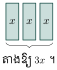
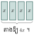
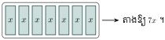
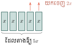
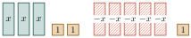
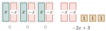
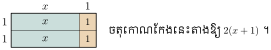
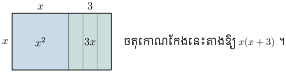
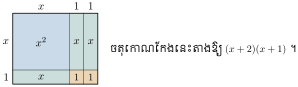

វត្ថុបំណង
- បកស្រាយចំណោទ ដើម្បីបង្ហាញពីសញ្ញាណកន្សោមពីជគណិត
- គណនាតម្លៃលេខនៃកន្សោមពីជគណិត
- គណនាផលបូកនិងផលដកនៃកន្សោមពីជគណិត
- គណនាផលគុណនៃកន្សោមពីជគណិត
- ដាក់កន្សោមពីជគណិតជាផលគុណកត្តា ។
1. សញ្ញាណកន្សោមពីជគណិត
ឧទាហរណ៍ 1 ៖ គេមានកន្សោមចំនួន \(\displaystyle 5 - 3 \times 7\) បើគេប្រើអក្សរ \(\displaystyle x\) និង \(\displaystyle y\) ជំនួសឱ្យ 7 និង 5 នោះគេបានកន្សោម \(\displaystyle y - 3x\) ហៅថា កន្សោមពីជគណិត ។
កន្សោម \(\displaystyle y - 3x\) មានពីរតួគឺ \(\displaystyle y, -3x\) ដែលមានពីរអថេរ \(\displaystyle x\) និង \(\displaystyle y\) ហើយ 3 ជាលេខមេគុណ ។
ឧទាហរណ៍ 2 ៖ ដីមួយកន្លែងមានរាងចតុកោណកែងដែលមានបណ្តោយស្មើនឹង \(\displaystyle 15~\text{m}\) និងទទឹងស្មើនឹង \(\displaystyle x~\text{m}\) ។ កំណត់បរិមាត្រនៃដីនោះ ។
តាមរូបមន្តបរិមាត្រ \(\displaystyle = (\text{ទទឹង} + \text{បណ្តោយ}) \times 2 = (x + 15) \times 2 = 2x + 30\)
កន្សោម \(\displaystyle 2x + 30\) ហៅថាកន្សោមពីជគណិតដែលមាន \(\displaystyle x\) ជាអថេរ ។
សម្គាល់ ៖ \(\displaystyle 2x\), \(\displaystyle 3x\) ឬ \(\displaystyle xy\) មានន័យថា \(\displaystyle 2 \times x\), \(\displaystyle 3 \times x\) ឬ \(\displaystyle x \times y\) ។
ឧទាហរណ៍ 3 ៖ តារាងខាងក្រោមបង្ហាញពីចំនួនអថេរនិងចំនួនតួរបស់កន្សោមពីជគណិត
| កន្សោមពីជគណិត | អថេរ | ចំនួនតួ |
| \(\displaystyle 7x\) | \(\displaystyle x\) | 1 |
| \(\displaystyle \frac{3}{2}a + 5b\) | \(\displaystyle a, b\) | 2 |
| \(\displaystyle 4n^2 - 7n + 1\) | \(\displaystyle n\) | 3 |
| \(\displaystyle 2x^3y - x^2 + 5z - 3\) | \(\displaystyle x, y, z\) | 4 |
លំហាត់គំរូ 1 ៖ សរសេរល្បះខាងក្រោមជាកន្សោមពីជគណិត
ក. \(\displaystyle 3x\) បូក \(\displaystyle 5y\)
ខ. ការ៉េនៃផលបូក \(\displaystyle m\) និង \(\displaystyle n\)
គ. \(\displaystyle 10a\) ដក \(\displaystyle 7b\) រួចចែកនឹង \(\displaystyle a\) ។
ដំណោះស្រាយ
ក. \(\displaystyle 3x + 5y\) ខ. \(\displaystyle (m + n)^2\) គ. \(\displaystyle (10a - 7b) \div a\) ឬ \(\displaystyle \frac{10a - 7b}{a}\)
លំហាត់គំរូ 2 ៖ ផលបូកនៃពីរចំនួនស្មើនឹង 100 បើចំនួនទី 1 ស្មើនឹង \(\displaystyle x\) ។ សរសេរកន្សោមពីជគណិតតាងឱ្យចំនួនទី 2 ។
ដំណោះស្រាយ
បើចំនួនទី 1 ស្មើនឹង \(\displaystyle x\) នោះចំនួនទី 2 ត្រូវស្មើនឹង \(\displaystyle (100 - x)\) ។
លំហាត់គំរូ 3 ៖ ផ្ទៀងផ្ទាត់សមភាពខាងក្រោម ដោយយក \(\displaystyle a = 2, b = 9\) និង \(\displaystyle c = 3\) ។
ក. \(\displaystyle a(b + c) = ab + ac\) ខ. \(\displaystyle a(b - c) = ab - ac\) ។
ដំណោះស្រាយ
ក. \(\displaystyle a(b + c) = ab + ac\)
អង្គខាងឆ្វេង \(\displaystyle a(b + c) = 2(9 + 3) = 2(12) = 24\)
អង្គខាងស្តាំ \(\displaystyle ab + ac = 2 \times 9 + 2 \times 3 = 18 + 6 = 24\)
គេឃើញថា អង្គខាងឆ្វេងស្មើនឹងអង្គខាងស្តាំ ដូច្នេះ៖ \(\displaystyle a(b + c) = ab + ac\) ។
ខ. \(\displaystyle a(b - c) = ab - ac\)
អង្គខាងឆ្វេង \(\displaystyle a(b - c) = 2(9 - 3) = 2(6) = 12\)
អង្គខាងស្តាំ \(\displaystyle ab - ac = 2 \times 9 - 2 \times 3 = 18 - 6 = 12\)
គេឃើញថា អង្គខាងឆ្វេងស្មើនឹងអង្គខាងស្តាំ ដូច្នេះ៖ \(\displaystyle a(b - c) = ab - ac\) ។
ក. ប្រាប់ចំនួនតួនិងអថេរនៃកន្សោមពីជគណិតនីមួយៗ \(\displaystyle 3xy + 5, x^3y - z - 24\)
ខ. ត្រីកោណកែងមួយមានបរិមាត្រ \(\displaystyle 13~\text{dm}\) និងជ្រុងទាំងពីរដែលជាប់មុំកែងមានរង្វាស់ \(\displaystyle x\) និង \(\displaystyle 3y\) ។ សរសេរកន្សោមពីជគណិតតាងឱ្យរង្វាស់អ៊ីប៉ូតេនុសនៃត្រីកោណកែង ។
មើលចម្លើយ
ក. កន្សោម \(\displaystyle 3xy + 5\) មាន 2 តួ និងមាន 2 អថេរ (\(\displaystyle x, y\)) ។
កន្សោម \(\displaystyle x^3y - z - 24\) មាន 3 តួ និងមាន 3 អថេរ (\(\displaystyle x, y, z\)) ។
ខ. រង្វាស់អ៊ីប៉ូតេនុសគឺ \(\displaystyle 13 - (x + 3y) = 13 - x - 3y\) (គិតជា \(\displaystyle \text{dm}\)) ។
2. តម្លៃលេខនៃកន្សោមពីជគណិត
ឧទាហរណ៍ 1 ៖ លោកលីចង់ទិញទឹកក្រូចចំនួន 2 កេសនិងទឹកផ្លែឈើចំនួន 5 កេស ។ គាត់មិនដឹងថាទឹកក្រូចនិងទឹកផ្លែឈើមួយកេសថ្លៃប៉ុន្មានទេ ។ គាត់បានជ្រើសរើសអថេរ \(\displaystyle x\) ជាតម្លៃទឹកក្រូចក្នុងមួយកេសគិតជាម៉ឺនរៀល ហើយ \(\displaystyle y\) ជាតម្លៃទឹកផ្លែឈើក្នុងមួយកេសគិតជាម៉ឺនរៀល ។ គាត់បានកន្សោមពីជគណិត \(\displaystyle 2x + 5y\) តាងប្រាក់ចំណាយរបស់គាត់ ។
បើ \(\displaystyle x = 2\) ម៉ឺនរៀលនិង \(\displaystyle y = 3\) ម៉ឺនរៀល គេបាន ៖
ដូច្នេះលោកលីត្រូវចំណាយអស់ប្រាក់ចំនួន 19 ម៉ឺនរៀល ។
19 ហៅថា តម្លៃលេខនៃកន្សោមពីជគណិត \(\displaystyle 2x + 5y\) ចំពោះ \(\displaystyle x = 2\) និង \(\displaystyle y = 3\) ។
ឧទាហរណ៍ 2 ៖ គណនាតម្លៃលេខនៃកន្សោមពីជគណិត \(\displaystyle 3y + 4\) បើគេឱ្យ ៖
ក. \(\displaystyle \underline{y = 2}\) ខ. \(\displaystyle \underline{y = -5}\)
ក. បើ \(\displaystyle y = 2\) នោះ៖ \(\displaystyle 3y + 4 = 3 \times 2 + 4 = 6 + 4 = 10\) (ជំនួស \(\displaystyle y\) ដោយ 2)
ខ. បើ \(\displaystyle y = -5\) នោះ៖ \(\displaystyle 3y + 4 = 3(-5) + 4 = -15 + 4 = -11\) (ជំនួស \(\displaystyle y\) ដោយ \(\displaystyle -5\))
ឧទាហរណ៍ 3 ៖ គណនាតម្លៃលេខនៃកន្សោមពីជគណិត \(\displaystyle \frac{b + 3}{5}\) ចំពោះ \(\displaystyle b = -18\) ។
ជំនួសតម្លៃ \(\displaystyle b = -18\) ក្នុងកន្សោមខាងលើ គេបាន ៖
- គណនាតម្លៃលេខនៃកន្សោមពីជគណិតខាងក្រោម ដោយយក \(\displaystyle a = 2, b = 6, c = 4\) និង \(\displaystyle d = 5\) ៖
ក. \(\displaystyle (b - c) + a\) ខ. \(\displaystyle (ab + c)d\) ។ - សុភាពនិងណារីទាំងពីរនាក់មានប្រាក់ \(\displaystyle 5~000~\text{រៀល}\) ។ បើគេដឹងថាសុភាពមានប្រាក់ \(\displaystyle y~\text{រៀល}\) ។
ក. សរសេរចំនួនប្រាក់របស់ណារីជាកន្សោមពីជគណិត
ខ. រកចំនួនប្រាក់របស់ណារី ចំពោះ \(\displaystyle y = 3~500~\text{រៀល}\) ។ - គណនាតម្លៃលេខនៃកន្សោមពីជគណិត \(\displaystyle \frac{3a}{b + 3}\) ចំពោះតម្លៃ \(\displaystyle a\) និង \(\displaystyle b\) ខាងក្រោម ៖
ក. \(\displaystyle a = 10\) និង \(\displaystyle b = 3\) ខ. \(\displaystyle a = -2\) និង \(\displaystyle b = -7\) ។ - គណនាតម្លៃ \(\displaystyle x\) ដែលធ្វើឱ្យកន្សោម \(\displaystyle \frac{x - 4}{x + 12}\) មិនអាចកំណត់បានឬគ្មានន័យ ។
មើលចម្លើយ
1. ក. \(\displaystyle (6 - 4) + 2 = 2 + 2 = 4\) ខ. \(\displaystyle (2 \times 6 + 4) \times 5 = (12 + 4) \times 5 = 16 \times 5 = 80\)
2. ក. ប្រាក់របស់ណារីគឺ \(\displaystyle 5~000 - y\) (រៀល)
ខ. ចំពោះ \(\displaystyle y = 3~500~\text{រៀល}\) ៖ \(\displaystyle 5~000 - 3~500 = 1~500~\text{រៀល}\)
3. ក. \(\displaystyle \frac{3(10)}{3 + 3} = \frac{30}{6} = 5\) ខ. \(\displaystyle \frac{3(-2)}{-7 + 3} = \frac{-6}{-4} = \frac{3}{2}\)
4. កន្សោម \(\displaystyle \frac{x - 4}{x + 12}\) គ្មានន័យកាលណាភាគបែងស្មើ 0 គឺ \(\displaystyle x + 12 = 0 \implies x = -12\) ។
3. វិធីបូកនិងដកកន្សោមពីជគណិត
3.1. វិធីបូកនិងដកកន្សោមពីជគណិតមានតួដូចគ្នា
ឧទាហរណ៍ 1 ៖ \(\displaystyle x + x = 2x, x + x + x = 3x\)
តួ \(\displaystyle 2x\) និងតួ \(\displaystyle 3x\) មានផ្នែកអថេរដូចគ្នាហៅថា តួដូចគ្នា ។
\(\displaystyle \underbrace{a + a + a + a}_{4} = 4a\), \(\displaystyle \underbrace{b + b + b + b + b + b}_{6} = 6b\)
តួ \(\displaystyle 4a\) និងតួ \(\displaystyle 6b\) ហៅថាតួខុសគ្នា ពីព្រោះ \(\displaystyle 4a\) និង \(\displaystyle 6b\) មានផ្នែកអថេរខុសគ្នា ។
ឧទាហរណ៍ 2 ៖ គណនាផលបូក ក. \(\displaystyle 3x\) និង \(\displaystyle 4x\) ខ. \(\displaystyle 5x\) និង \(\displaystyle -2x\) ។
ក. តាងចតុកោណកែងមួយមានបណ្តោយស្មើនឹង \(\displaystyle x\) និងទទឹងស្មើនឹង \(\displaystyle 1\) ដោយផ្ទៃក្រឡាចតុកោណកែង \(\displaystyle = x \times 1 = x\) ដូច្នេះផ្ទៃក្រឡាចតុកោណកែង \(\displaystyle x\) តាងឱ្យអថេរ \(\displaystyle x\) ។
គេបាន តាងឱ្យ \(\displaystyle 3x\) និង តាងឱ្យ \(\displaystyle 4x\) ។



ដូច្នេះ៖ \(\displaystyle 3x + 4x = 7x\) ។
ខ. គេអាចសរសេរទៅជាទម្រង់ផលដក \(\displaystyle 5x - 2x\)

រូបចតុកោណកែងទាំងអស់ 5 តាងឱ្យ \(\displaystyle 5x\)
បើយករូបចតុកោណកែង 2 តាងឱ្យ \(\displaystyle -2x\) ចេញ រូបចតុកោណកែងនៅសល់ 3 តាងឱ្យ \(\displaystyle 3x\)
ដូច្នេះ៖ \(\displaystyle 5x + (-2x) = 3x\) ។
លំហាត់គំរូ ៖ គណនាផលបូកកន្សោមពីជគណិត \(\displaystyle 3x + 2 - 5x + 1\) ។
ដំណោះស្រាយ
រូបចតុកោណកែង តាងឱ្យ \(\displaystyle x\) ហើយ រូបចតុកោណកែងមានឆ្នូតតាងឱ្យ \(\displaystyle -x\) ។ ចំណែករូបការ៉េ តាងឱ្យ \(\displaystyle 1\) គេបាន ៖


ផ្តុំតួដែលដូចគ្នា គេបាន \(\displaystyle 3x + (-3x) = 0\)
ដូច្នេះ៖ \(\displaystyle 3x + 2 - 5x + 1 = -2x + 3\) ។
គណនាផលបូកកន្សោមពីជគណិត \(\displaystyle 4y - 2 - 3y + 5\) ដោយប្រើរូបចតុកោណកែងនិងការ៉េ ។
មើលចម្លើយ
\(\displaystyle y + 3\) ។
3.2. វិធីបូកនិងដកកន្សោមពីជគណិតដោយដាក់ជាកត្តា
ឧទាហរណ៍ ៖ ក្នុងការគណនាផលបូកកន្សោមពីជគណិតនៃឧទាហរណ៍ 2 ខាងលើ គេបានលទ្ធផល ៖
\(\displaystyle 3x + 4x = 7x = (3 + 4)x\)
\(\displaystyle 5x + (-2x) = 3x = (5 - 2)x\) ។
\(\displaystyle ax \pm bx = (a \pm b)x\) ឬ \(\displaystyle x(a \pm b)\) ។
ក្នុងការអនុវត្ត គេអាចគណនាដោយខ្លីដូចជា \(\displaystyle 3x + 2x = 5x\) និង \(\displaystyle 4x - 2x = 2x\) ។
លំហាត់គំរូ ៖ គណនាកន្សោម ក. \(\displaystyle 2x + (-7x)\) ខ. \(\displaystyle 5x - 5x\) ។
ដំណោះស្រាយ
ក. \(\displaystyle 2x + (-7x) = 2x - 7x = (2 - 7)x = -5x\) ។
ខ. \(\displaystyle 5x - 5x = (5 - 5)x = 0(x) = 0\) ។
គណនាកន្សោម ក. \(\displaystyle 8x + (-7x)\) ខ. \(\displaystyle 10x + 23x\) ។
មើលចម្លើយ
ក. \(\displaystyle x\) ខ. \(\displaystyle 33x\) ។
3.3. វិធីបូកនិងដកកន្សោមពីជគណិតដោយប្រើលក្ខណៈផ្តុំ
ឧទាហរណ៍ ៖ គណនា \(\displaystyle A = (4x - 1) + (-3x + 6)\) និង \(\displaystyle B = (3x - 4) - (x - 7)\) ។
ដូច្នេះ៖ \(\displaystyle A = x + 5\) ។
ដូច្នេះ៖ \(\displaystyle B = 2x + 3\) ។
លំហាត់គំរូ 1 ៖ គណនា \(\displaystyle 5x - y - 2y + 2z^2 - 8x - z + 4y\) ។
ដំណោះស្រាយ
ដំបូងត្រូវផ្តុំតួឯកតាដូចគ្នា គេបាន ៖
សម្គាល់៖ តួ \(\displaystyle 2z^2\) និង \(\displaystyle -z\) ជាតួមិនដូចគ្នា ដូច្នេះមិនអាចបូកចូលគ្នាបានទេ ។
លំហាត់គំរូ 2 ៖ រកបរិមាត្រនៃត្រីកោណ (រូបខាងស្តាំ) ហើយបង្រួមលទ្ធផល ។
ដំណោះស្រាយ
បរិមាត្រត្រីកោណ ៖
ដូចនេះ \(\displaystyle P = 6x + 20\) ។
បង្រួមកន្សោម \(\displaystyle 2a + 5b + 7a + 9b\) រួចគណនាតម្លៃកន្សោមចំពោះ \(\displaystyle a = -2\) និង \(\displaystyle b = 7\) ។
មើលចម្លើយ
បង្រួមកន្សោម ៖ \(\displaystyle (2a + 7a) + (5b + 9b) = 9a + 14b\) ។
ចំពោះ \(\displaystyle a = -2\) និង \(\displaystyle b = 7\) ៖ \(\displaystyle 9(-2) + 14(7) = -18 + 98 = 80\) ។
4. វិធីគុណកន្សោមពីជគណិត
ឧទាហរណ៍ 1 ៖ \(\displaystyle x \times x = x^2, x \times x \times x = x^3\)
\(\displaystyle 3x^2 \times x^3 = 3 \times x \times x \times x \times x \times x = 3x^5\)
\(\displaystyle -2x \times 3x^2 = (-2)(3) \times x \times x \times x = -6x^3\) ។
ឧទាហរណ៍ 2 ៖ គណនាផលគុណ ក. \(\displaystyle 2(x + 1)\) ខ. \(\displaystyle x(x + 3)\) ។
ក. \(\displaystyle 2(x + 1)\) ៖
គូសចតុកោណកែងមួយមានទទឹង 2 ឯកតា និងបណ្តោយ \(\displaystyle (x + 1)\) ឯកតា ។

ផ្ទៃក្រឡាចតុកោណកែងស្មើនឹង \(\displaystyle x + x + 1 + 1 = 2x + 2\)
ដូច្នេះ៖ \(\displaystyle 2(x + 1) = 2x + 2\) ។
ខ. \(\displaystyle x(x + 3)\) ៖
គូសចតុកោណកែងដែលមានទទឹង \(\displaystyle x\) ឯកតា និងបណ្តោយ \(\displaystyle (x + 3)\) ឯកតា ។

ផ្ទៃក្រឡាចតុកោណកែងស្មើនឹង \(\displaystyle x^2 + 3x\)
ហេតុនេះ៖ \(\displaystyle x(x + 3) = x^2 + 3x\) ។
\(\displaystyle a(b + c) = ab + ac\) ។
ឧទាហរណ៍ 3 ៖ គណនាផលគុណ \(\displaystyle (x + 2)(x + 1)\) ។
គូសចតុកោណកែងដែលមានបណ្តោយ \(\displaystyle (x + 2)\) ឯកតា និងទទឹង \(\displaystyle (x + 1)\) ឯកតា រួចសង្កេតមើលផ្ទៃក្រឡាចតុកោណកែងនោះ ។

ផ្ទៃក្រឡាចតុកោណកែងស្មើនឹង \(\displaystyle x^2 + x + x + x + 1 + 1 = x^2 + 3x + 2\) ។
ដូច្នេះ \(\displaystyle (x + 2)(x + 1) = x^2 + 3x + 2\) ។
\(\displaystyle (a + b)(c + d) = a(c + d) + b(c + d) = ac + ad + bc + bd\) ។
លំហាត់គំរូ 1 ៖ គណនាផលគុណ ក. \(\displaystyle 4(x + y)\) ខ. \(\displaystyle -5(x - 2)\) ។
ដំណោះស្រាយ
ក. \(\displaystyle 4(x + y) = 4x + 4y\) ខ. \(\displaystyle -5(x - 2) = -5x + 10\) ។
លំហាត់គំរូ 2 ៖ គណនាផលគុណកន្សោមពីជគណិត
ក. \(\displaystyle (x - 1) + (2x + 3)(x - 2)\)
ខ. \(\displaystyle (x - 3) - (x + 1)(3x - 2)\) ។
ដំណោះស្រាយ
ក. \(\displaystyle \begin{aligned}[t]
(x - 1) + (2x + 3)(x - 2) &= (x - 1) + (2x^2 - 4x + 3x - 6) \\
&= x - 1 + 2x^2 - x - 6 \\
&= 2x^2 - 7
\end{aligned}\)
ខ. \(\displaystyle \begin{aligned}[t]
(x - 3) - (x + 1)(3x - 2) &= (x - 3) - (3x^2 - 2x + 3x - 2) \\
&= x - 3 - 3x^2 - x + 2 \\
&= -3x^2 - 1
\end{aligned}\)
គណនាផលគុណកន្សោមពីជគណិត ៖
ក. \(\displaystyle 4(x - 5) + (x - 2)(2x - 5)\)
ខ. \(\displaystyle 4(x - 5) - (x - 2)(2x - 5)\) ។
មើលចម្លើយ
ក. \(\displaystyle \begin{aligned}[t]
4(x - 5) + (x - 2)(2x - 5) &= 4x - 20 + 2x^2 - 5x - 4x + 10 \\
&= 2x^2 - 5x - 10
\end{aligned}\)
ខ. \(\displaystyle \begin{aligned}[t]
4(x - 5) - (x - 2)(2x - 5) &= 4x - 20 - (2x^2 - 9x + 10) \\
&= 4x - 20 - 2x^2 + 9x - 10 \\
&= -2x^2 + 13x - 30
\end{aligned}\)
5. ការដាក់ជាផលគុណកត្តា
គេដឹងថា \(\displaystyle a(b + c)\) និង \(\displaystyle ab + ac\) មានតម្លៃស្មើគ្នា ។
កាលណាគេសរសេរ \(\displaystyle a(b + c) = ab + ac\) មានន័យថា គេពន្លាតផលគុណ \(\displaystyle a(b + c)\) ជាផលបូក \(\displaystyle ab + ac\) ។
កាលណាគេសរសេរ \(\displaystyle ab + ac = a(b + c)\) មានន័យថា គេដាក់ផលបូក \(\displaystyle ab + ac\) ជាផលគុណកត្តា \(\displaystyle a(b + c)\) ។
ឧទាហរណ៍ ៖ ដាក់ជាផលគុណកត្តា
ក. \(\displaystyle yz - 3y = y(z - 3)\) ខ. \(\displaystyle 12x + 6xy = 6x(2 + y)\) គ. \(\displaystyle 4xy - 6yz = 2y(2x - 3z)\) ។
លំហាត់គំរូ ៖ ដាក់ជាផលគុណកត្តា
ក. \(\displaystyle ax - ay + bx - by\) ខ. \(\displaystyle mn + 3m - 4n - 12\) ។
ដំណោះស្រាយ
ក. \(\displaystyle \begin{aligned}[t]
ax - ay + bx - by &= (ax - ay) + (bx - by) \quad (\text{ផ្តុំតួ}) \\
&= a(x - y) + b(x - y) \\
&= (x - y)(a + b) \quad (\text{ដាក់ } (x - y) \text{ ជាកត្តា})
\end{aligned}\)
ខ. \(\displaystyle \begin{aligned}[t]
mn + 3m - 4n - 12 &= (mn + 3m) - (4n + 12) \\
&= m(n + 3) - 4(n + 3) \\
&= (n + 3)(m - 4)
\end{aligned}\)
ដាក់ជាផលគុណកត្តា ៖
ក. \(\displaystyle ab + a + b + 1\) ខ. \(\displaystyle xz + 2z + 2y + xy\) គ. \(\displaystyle 4ay - 24az\)
ឃ. \(\displaystyle 18a - 54ay + 36az\) ង. \(\displaystyle 21pq + 14q - 28qr\) ច. \(\displaystyle 4x - 8(y - 2z)\)
មើលចម្លើយ
ក. \(\displaystyle a(b + 1) + (b + 1) = (a + 1)(b + 1)\)
ខ. \(\displaystyle z(x + 2) + y(2 + x) = (x + 2)(y + z)\)
គ. \(\displaystyle 4a(y - 6z)\)
ឃ. \(\displaystyle 18a(1 - 3y + 2z)\)
ង. \(\displaystyle 7q(3p + 2 - 4r)\)
ច. \(\displaystyle 4[x - 2(y - 2z)] = 4(x - 2y + 4z)\)
លំហាត់
សរសេរជាកន្សោមពីជគណិត តាមល្បះខាងក្រោម ៖
- ក. បួនដក \(\displaystyle x\)
- ខ. \(\displaystyle y\) បូក \(\displaystyle 10\)
- គ. ការ៉េនៃផលបូក \(\displaystyle x\) និង \(\displaystyle y\)
- ឃ. \(\displaystyle 2b\) បូកនឹងផលគុណ \(\displaystyle m\) និង \(\displaystyle n\)
- ង. ផលគុណរវាង \(\displaystyle x\) បូក \(\displaystyle y\) និង \(\displaystyle x\) ដក \(\displaystyle y\) ។
មើលដំណោះស្រាយ
- ក. \(\displaystyle 4 - x\)
- ខ. \(\displaystyle y + 10\)
- គ. \(\displaystyle (x + y)^2\)
- ឃ. \(\displaystyle 2b + mn\)
- ង. \(\displaystyle (x + y)(x - y)\)
- ក. ផលបូកនៃពីរចំនួនស្មើនឹង 80 ។ បើចំនួនទីមួយស្មើនឹង \(\displaystyle x\) ។ សរសេរជាកន្សោមពីជគណិត សម្រាប់ចំនួនទីពីរ ។
- ខ. ផលដកនៃពីរចំនួនស្មើនឹង 10 បើចំនួនដែលតូចជាងតាងដោយអក្សរ \(\displaystyle y\) ។ សរសេរជាកន្សោមពីជគណិត សម្រាប់ចំនួនមួយទៀត ។
មើលដំណោះស្រាយ
- ក.
បើផលបូកនៃពីរចំនួនស្មើនឹង 80 ហើយចំនួនទីមួយស្មើនឹង \(\displaystyle x\) នោះកន្សោមសម្រាប់ចំនួនទីពីរគឺ ៖
\[80 - x\] - ខ.
បើផលដកនៃពីរចំនួនស្មើនឹង 10 ហើយចំនួនតូចជាងតាងដោយ \(\displaystyle y\) នោះចំនួនមួយទៀត (ចំនួនធំ) គឺ ៖
\[y + 10\]
គណនាតម្លៃលេខនៃកន្សោមពីជគណិត \(\displaystyle x(3y + 2)\) ចំពោះ ៖
- ក. \(\displaystyle x = 7\) និង \(\displaystyle y = 2\)
- ខ. \(\displaystyle x = -3\) និង \(\displaystyle y = -1\)
- គ. \(\displaystyle x = 5\) និង \(\displaystyle y = -4\) ។
មើលដំណោះស្រាយ
- ក.
ចំពោះ \(\displaystyle x = 7, y = 2\) ៖
\[x(3y + 2) = 7(3(2) + 2) = 7(6 + 2) = 7(8) = 56\] - ខ.
ចំពោះ \(\displaystyle x = -3, y = -1\) ៖
\[x(3y + 2) = -3(3(-1) + 2) = -3(-3 + 2) = -3(-1) = 3\] - គ.
ចំពោះ \(\displaystyle x = 5, y = -4\) ៖
\[x(3y + 2) = 5(3(-4) + 2) = 5(-12 + 2) = 5(-10) = -50\]
រថយន្តមួយមានល្បឿនមធ្យម \(\displaystyle 60~\text{km}\) ក្នុង \(\displaystyle 1~\text{h}\) ។ សរសេររូបមន្តចម្ងាយចរ \(\displaystyle d\) ក្នុងរយៈពេល \(\displaystyle t\) រួចគណនាចម្ងាយចរ កាលណាគេបើកបរក្នុងរយៈពេល \(\displaystyle t = 2~\text{h}\), \(\displaystyle t = 2~\text{h}~20~\text{mn}\), \(\displaystyle t = 30~\text{mn}\) និង \(\displaystyle t = 1~\text{h}~5~\text{mn}\) ។
មើលដំណោះស្រាយ
រូបមន្តចម្ងាយចរ ៖ ដោយល្បឿន \(\displaystyle v = 60~\text{km/h}\) នោះ ៖
\[d = v \times t = 60t \quad (\text{គិតជា } \text{km} \text{ ដោយ } t \text{ គិតជាម៉ោង})\]គណនាចម្ងាយចរ ៖
ចំពោះ \(\displaystyle t = 2~\text{h}\) ៖
\[d = 60 \times 2 = 120~\text{km}\]ចំពោះ \(\displaystyle t = 2~\text{h}~20~\text{mn} = 2 + \frac{20}{60} = 2 + \frac{1}{3} = \frac{7}{3}~\text{h}\) ៖
\[d = 60 \times \frac{7}{3} = 140~\text{km}\]ចំពោះ \(\displaystyle t = 30~\text{mn} = \frac{30}{60} = \frac{1}{2}~\text{h}\) ៖
\[d = 60 \times \frac{1}{2} = 30~\text{km}\]ចំពោះ \(\displaystyle t = 1~\text{h}~5~\text{mn} = 1 + \frac{5}{60} = 1 + \frac{1}{12} = \frac{13}{12}~\text{h}\) ៖
\[d = 60 \times \frac{13}{12} = 65~\text{km}\]
ចតុកោណកែងមួយមានបណ្តោយស្មើនឹង \(\displaystyle 15~\text{m}\) និងមានទទឹងស្មើនឹង \(\displaystyle x~\text{m}\) ។
- ក. សរសេររូបមន្តបរិមាត្រ \(\displaystyle P\) នៃចតុកោណកែង
- ខ. គណនាបរិមាត្រចតុកោណកែង ចំពោះ \(\displaystyle x = 5~\text{m}\), \(\displaystyle x = 8~\text{m}\) និង \(\displaystyle x = 10~\text{m}\) ។
មើលដំណោះស្រាយ
- ក.
រូបមន្តបរិមាត្រ \(\displaystyle P\) នៃចតុកោណកែង ៖
\[P = 2 \times (\text{បណ្តោយ} + \text{ទទឹង}) = 2(15 + x) = 30 + 2x \quad (\text{គិតជា } \text{m})\] - ខ.
គណនាបរិមាត្រចតុកោណកែង ៖
ចំពោះ \(\displaystyle x = 5~\text{m}\) ៖
\[P = 2(15 + 5) = 2(20) = 40~\text{m}\]ចំពោះ \(\displaystyle x = 8~\text{m}\) ៖
\[P = 2(15 + 8) = 2(23) = 46~\text{m}\]ចំពោះ \(\displaystyle x = 10~\text{m}\) ៖
\[P = 2(15 + 10) = 2(25) = 50~\text{m}\]
គណនា ៖
- ក. \(\displaystyle 3x + 7x\)
- ខ. \(\displaystyle 2x - 5x\)
- គ. \(\displaystyle 3x \times 6x\)
- ឃ. \(\displaystyle 4x \times (-8x)\) ។
មើលដំណោះស្រាយ
- ក. \(\displaystyle 3x + 7x = (3 + 7)x = 10x\)
- ខ. \(\displaystyle 2x - 5x = (2 - 5)x = -3x\)
- គ. \(\displaystyle 3x \times 6x = (3 \times 6)(x \times x) = 18x^2\)
- ឃ. \(\displaystyle 4x \times (-8x) = (4 \times (-8))(x \times x) = -32x^2\)
ពន្លាតកន្សោម ៖
- ក. \(\displaystyle (x + 1)(x - 1)\)
- ខ. \(\displaystyle (x + 3)(x - 2)\)
- គ. \(\displaystyle (2x - 3)(5 - 3x)\)
- ឃ. \(\displaystyle (x + 3)(x + 3)\)
- ង. \(\displaystyle (2x - 3)(y + 2)\)
- ច. \(\displaystyle 4(x - 3) + (x - 5)(x + 1)\)
- ឆ. \(\displaystyle -2(2 - x) - (x + 2)(3x + 1)\) ។
មើលដំណោះស្រាយ
- ក. \(\displaystyle (x + 1)(x - 1) = x^2 - x + x - 1 = x^2 - 1\)
- ខ. \(\displaystyle (x + 3)(x - 2) = x^2 - 2x + 3x - 6 = x^2 + x - 6\)
- គ. \(\displaystyle (2x - 3)(5 - 3x) = 10x - 6x^2 - 15 + 9x = -6x^2 + 19x - 15\)
- ឃ. \(\displaystyle (x + 3)(x + 3) = (x + 3)^2 = x^2 + 6x + 9\)
- ង. \(\displaystyle (2x - 3)(y + 2) = 2xy + 4x - 3y - 6\)
- ច. \(\displaystyle \begin{aligned}[t] 4(x - 3) + (x - 5)(x + 1) &= (4x - 12) + (x^2 + x - 5x - 5) \\ &= 4x - 12 + x^2 - 4x - 5 \\ &= x^2 - 17 \end{aligned}\)
- ឆ. \(\displaystyle \begin{aligned}[t] -2(2 - x) - (x + 2)(3x + 1) &= (-4 + 2x) - (3x^2 + x + 6x + 2) \\ &= -4 + 2x - (3x^2 + 7x + 2) \\ &= -4 + 2x - 3x^2 - 7x - 2 \\ &= -3x^2 - 5x - 6 \end{aligned}\)
ដាក់ជាផលគុណកត្តា ៖
- ក. \(\displaystyle ax + bx\)
- ខ. \(\displaystyle ax - ab\)
- គ. \(\displaystyle ab - 3a\)
- ឃ. \(\displaystyle 5x^2 + 10x\)
- ង. \(\displaystyle 3a + 3b + 3c\)
- ច. \(\displaystyle 8x + 12y - 4z\)
- ឆ. \(\displaystyle 3(x - 4) + x(x - 4)\)
- ជ. \(\displaystyle (x - 5)(x + 2) - (3x + 1)(x - 5)\)
- ឈ. \(\displaystyle xy + 3x - 4y - 12\)
- ញ. \(\displaystyle 3ab + 7b - 3ac - 7c\)
- ដ. \(\displaystyle 7x + xy - yz - 7z\) ។
មើលដំណោះស្រាយ
- ក. \(\displaystyle ax + bx = x(a + b)\)
- ខ. \(\displaystyle ax - ab = a(x - b)\)
- គ. \(\displaystyle ab - 3a = a(b - 3)\)
- ឃ. \(\displaystyle 5x^2 + 10x = 5x(x + 2)\)
- ង. \(\displaystyle 3a + 3b + 3c = 3(a + b + c)\)
- ច. \(\displaystyle 8x + 12y - 4z = 4(2x + 3y - z)\)
- ឆ. \(\displaystyle 3(x - 4) + x(x - 4) = (x - 4)(3 + x)\)
- ជ. \(\displaystyle \begin{aligned}[t] (x - 5)(x + 2) - (3x + 1)(x - 5) &= (x - 5)[(x + 2) - (3x + 1)] \\ &= (x - 5)(x + 2 - 3x - 1) \\ &= (x - 5)(-2x + 1) \end{aligned}\)
- ឈ. \(\displaystyle \begin{aligned}[t] xy + 3x - 4y - 12 &= (xy + 3x) - (4y + 12) \\ &= x(y + 3) - 4(y + 3) \\ &= (y + 3)(x - 4) \end{aligned}\)
- ញ. \(\displaystyle \begin{aligned}[t] 3ab + 7b - 3ac - 7c &= (3ab + 7b) - (3ac + 7c) \\ &= b(3a + 7) - c(3a + 7) \\ &= (3a + 7)(b - c) \end{aligned}\)
- ដ. \(\displaystyle \begin{aligned}[t] 7x + xy - yz - 7z &= (7x - 7z) + (xy - yz) \\ &= 7(x - z) + y(x - z) \\ &= (x - z)(7 + y) \end{aligned}\)
ខ្លឹមសារ៖ សៀវភៅពុម្ពគណិតវិទ្យាថ្នាក់ទី៧ របស់ក្រសួងអប់រំ យុវជន និងកីឡា · វាយអត្ថបទ គូររូបភាពឡើងវិញ និងរៀបចំលើអនឡាញដោយលោកគ្រូ សាន សុខលី សម្រាប់ការសិក្សាដោយឥតគិតថ្លៃ និងមិនរកប្រាក់ចំណេញ។ មិនមែនជាការបោះពុម្ពផ្លូវការរបស់ក្រសួងទេ។